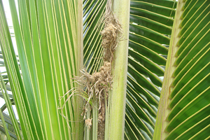
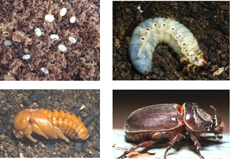
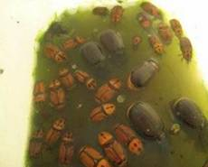
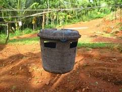

| Home |
| COCONUT |
| 1. Rhinoceros beetle |
| 2. Red palm weevil |
| 3. Black headed caterpillar |
| 4. Coconut Eriophyid mite |
| 5. White grub |
| 6. Slug caterpillar |
| 7. Mealy bug |
| 8. Scale Insect |
| 9. Lacewing bug |
| 10. Termite |
| 11. Coconut Skippers |
| Questions |
| Download Notes |
PESTS OF COCONUT
1. Rhinoceros beetle: Oryctes rhinoceros, (Scarabaeidae: Coleoptera)
Host range
Pineapple, sugarcane, arecanut, sago, oilpalm, palmyra, date palm and wild dates.
Distribution and status
Widely distributed throughout coconut growing areas in India. Regular pest on coconut.
 |
Damage symptoms |
|
Bionomics
Female lays upto 140 oval creamy white eggs in manure pits or decaying vegetable matter at a depth of 5 to 15 cm. Egg period 8-18 days, Stout, sluggish, white grub with pale brown head is found at a depth of 5 to 30 cm. Grubs feed on the decaying matter and grub stage lasts for 99 to 182 days. Grub pupates in earthern cells at a depth of 0.3 to 1 m and emerges as adults in 10-25 days. Adult beetle is stout, black and has a long horn projecting dorsally from the head in male. Horn is short in female.
|
 |
Management
- Destroy and dispose all dead trees
- Avoid manure pits in the vicinity of coconut gardens
- Rake and turn up the decaying manure to expose the developing grub, egg and pupae to sun drying and predation. Then apply the fungal culture of Metarrhizium anisopliae to manure pits during cooler months of October - December.
- Encourage reduviid predators, Platymeris laevicollis
- Once in three months, drench the manure pits with carbaryl 50 WP 1 g/lit
- In seedlings, place naphthalene balls @ 3 / tree, in the innermost three leaf axils once in 45 days.
- Soak castor cake @ 1 kg/5 lit of water in wide mouthed mud pots and keep them in the garden to attract and kill adults. Replace the slurry once in 30 days.
- Fermented toddy may be kept in wide mouthed earthern vessels in different places to attract the adults during night.
- The crown region may be properly cleaned during harvests and the adults may be hooked out using a long wire.
- Light traps may be set up to attract the adults during monsoon months and following rains during summer.
- The top-most three axils may be filled with a mixture of sand + Neem Seed Powder (2:1) once in three months (150 g/tree)
- Fill leaf axil with powdered marotti cake (Hydnocarpus) @ 250 g /palm during May, September and January as a prophylactic measure.
- Incorporate Clerodendron infortunatum whole plant in the breeding sites
- Use aggregation pheromone traps Rhinolure @ 1/ha. Instal the trap at five feet from the ground level.
 |
 |
Use aggregation pheromone traps Rhinolure @ 1/ha. Instal the trap at five feet from the ground level.